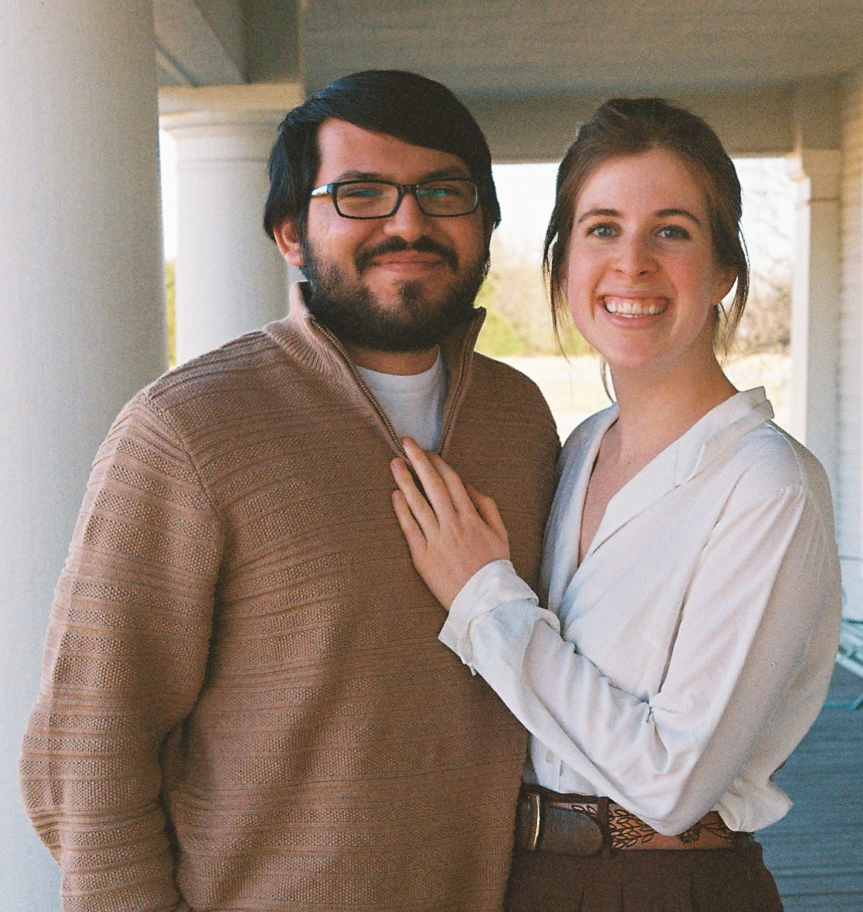

Our Story
Joshua De La Garza and
Reagan Lane Davis
Most people have a hard time remembering the first day of first grade. Josh and Reagan are no exception and could not tell you a thing about the first time they met. After all, they barely knew how to read. Fast forward to tenth grade, both knew how to read, and Reagan decided to use her skills to befriend Josh in English class. She edited his papers, he rolled his eyes at her silly jokes, and somewhere along the way they found themselves beyond the confines of the English classroom to a Football game where Josh asked Reagan on their first date. Josh and Reagan continued to date through highschool. They spent numerous afternoons at Sonic together–a Dallas Christian tradition. Reagan cheered on Josh at his soccer games. They always had somewhere to go– a football game, an academic competition, and band concerts– and they were more than happy to be able to go together. Highschool ended, and their relationship only grew stronger, their love for each other deepened. They traded highschool soccer games for afternoons spent with each other’s families. Academic competitions turned into study sessions. Band concerts morphed to symphony tickets. And the room was made for new loves too. Josh was there as Reagan branched out and pushed herself to try for new leadership roles in college. Reagan proudly cheered Josh on as he decided to become a Vet Technician. They went on vacations, adopted a dog together, and moved to a new city to start new jobs. Right before Reagan graduated from college, Josh proposed to Reagan at her family home under a beautiful pecan tree. They spent an evening together with their families, eating and celebrating. They are so lucky to already have such a long story with each other. And yet, they find themselves constantly surprised by how many new pages they are able to add everyday. They are so excited you will be joining them for this chapter!
